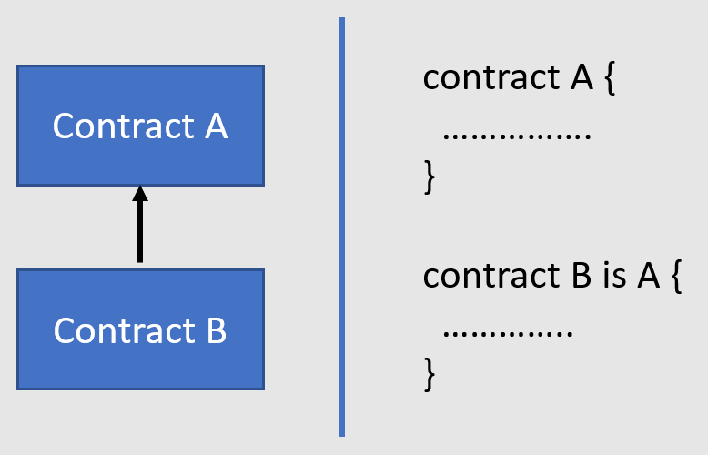

Solidity vs Vyper
The newest smart contract programming language, Vyper, has developers wondering, "Is this the end for Solidity?" or "Will I need to learn a whole new language just to maintain my current projects?"
No need to keep you in suspense as this is not the case. Vyper is an additional option, not a forced replacement, in the smart contract developer toolkit.
"Great! Something new to make my smart contracts better," you might be thinking. But what are the differences and how can your smart contracts benefit from using Vyper over Solidity?
Well hold on to your shorts because we'll be covering all that and more to introduce you to Vyper smart contract development
The Backdrop for Ethereum
As governments and large companies move closer towards nationalism and centralization, cryptocurrency projects like Ethereum are developing a platform to build new models of open finance and decentralized governance. So far, the DeFi movement and various DAO projects, like MetaCartel, are the results of these efforts.
However, this is only the beginning. Ethereum is a globally decentralized, peer-to-peer, internet infrastructure. As it continues to grow and restore ownership of personal data and money to users of the platform, it reduces the control of centralized entities.
In order to carry out the instructions of these projects over this decentralized network, Ethereum uses smart contracts. These smart contracts have traditionally been written in the Solidity programming language.
Enter Solidity
Solidity is popularly used on the Ethereum blockchain and was inspired by the C++, Python, and JavaScript programming languages.
“Solidity is an object-oriented, high-level language for implementing smart contracts. Smart contracts are programs which govern the behaviour of accounts within the Ethereum state.”
Smart contracts are like classes found in other object-oriented programming languages. Except instead of acting as a blueprint for creating objects, like traditional classes, smart contracts act as self-enforcing, digital agreements for using a program or app. It's also important to note that anyone on the network can interact and view smart contracts built on Ethereum.
This means smart contracts can store, carry out, and enforce agreements between users. And since they live on the blockchain, anyone can review the terms before using an app built using a smart contract. Despite this big difference, Solidity still shares many features found in other object-oriented programming languages.
OOP + S: Object-Oriented Programming & Solidity
Three key features that Solidity has adopted as an object-oriented programming language are:
- Encapsulation
- Inheritance
- Polymorphism
Encapsulation is the feature that allows smart contracts to be built like classes in other programming languages. Data types and methods within classes are defined by the developer. Similarly, the data types and functions in a smart contract are also defined by the developer. As a result, smart contracts act as self-contained components that can be deployed as separate instances on the blockchain.
Inheritance allows smart contracts to inherit data types and functions from other smart contracts. This mirrors the parent-child inheritance relationship seen in single inheritance structures found in other object-oriented programming languages. Multi-level, multiple, and hierarchical inheritance are also supported in Solidity.
This offers some flexibility and modularity, as one smart contract does not have to contain every data type or function that is called. This also allows for the implementation of upgradable smart contracts.
A core feature of blockchain, including the Ethereum blockchain, is immutability. Once deployed to the blockchain, data cannot be altered or removed by an external authority. As a result, smart contracts cannot be changed after they are deployed. However, developers can “upgrade” their smart contracts through inheritance.
But doesn't this break one of the major reasons for using blockchain? Namely, immutability. Not really, because the original contract holding your data before the "upgrade" is still on the blockchain with all its information intact. That's just not the smart contract you're talking to anymore.
Polymorphism allows users to interact with different child contracts and still derive the expected values held by the same parent contract.
Let's break that down a bit. As seen in the image below, Contract B and Contract C both inherit from Contract A. They are Contract A's children, and as such they do all the things Contract A does because the apple doesn't fall far from the tree. However, they can also do things Contract A cannot do. Such a proud parent contract.
This means users can call functions unique to Contract B as well as those it inherited from Contract A. One of those unique functions in Contract B could be called upgrade(). If Contract B can no longer carry on the family tradition, upgrade() changes the contract users talk to from Contract B to Contract C. And now Contract C takes Contract B's place and continues the family tradition! (Don't worry, Contract B still calls.)
The Solidity programming language is used most in smart contract development on the Ethereum blockchain. However, a new programming language, Vyper, is being introduced to Ethereum.
Though still in beta, Vyper aims to increase smart contract security and reduce the chance of writing misleading code. As a result, its range of features will be limited compared to those in Solidity.
Vyper: Because We All Make Mistakes
Vyper focuses on smart contract security, auditability, and simplicity.
“Vyper is a contract-oriented, pythonic programming language that targets the Ethereum Virtual Machine (EVM).”
Vyper's goal is to make smart contract code easier to read. Because if it's easier to read, it's easier to catch mistakes. It does this by cutting out a lot of features Solidity has that are useful for more complex logic, but not necessary to still get the job done.
Specifically, Vyper removes:
- modifiers
- class inheritance
- inline assembly
- function overloading
- operator overloading
- recursion
- infinite-length loops
- binary fixed point
Most of these features create security risks due to their added complexity. In other words, it's harder to get a lay of the land when your view is being blocked by trees, hills, and other features of the landscape.
By removing them, it's still possible to create a fully-fledged smart contract. However, what you can do is severely limited. The idea being that you're less likely to create a bug because the code is easier to audit, since it's more readable, and you have less opportunity to mess up - not that you would of course - because you're so limited in what you can do. You're basically trading flexibility with security.
How Is a Vyper Is Different Than a Python?
As stated in its documentation, Vyper is most heavily influenced by Python. This is visible in its syntax.
Vyper Script:
vyper file-name.vy
Python Script:
python file-name.py
But it's logic is still similar to Solidity.
Vyper State Variable:
stateVariable: int256
Solidity State Variable:
int256 stateVariable;
Fun fact: Vyper’s syntax is also valid Python 3 syntax. However, the features found in Vyper are very limited compared to Python. The limitations of Vyper should not be seen as a drawback though. It's a feature of the language that makes it very useful when writing code that prioritizes security over everything else.
Of course, security is always important when writing code that handles other people's money. But it's even more so when handling non-recoverable, sensitive information. For example, it could be disastrous if a security bug compromised consumer credit card information, confidential patient records, undercover security personnel files, or atomic launch codes!
Vyper gives extra assurance that these bad things don't happen by limiting what smart contracts can do to reduce human error when reading and writing code. See, totally a feature.
Vyper focuses on increased security and readability through a minimalist approach. While Solidity offers more robustness, Vyper aims for simplicity.
This is in response to the immutable nature of smart contracts on the blockchain. While it is possible to create upgradable smart contracts in Solidity to fix errors, this is not a reasonable expectation in every case.
Also, smart contracts often handle large sums of financial assets, so small mistakes can still be critical ones. Since the blockchain is immutable, there is no easy way to correct these errors after deployment.
Therefore, Vyper limits the tools available to developers to reduce the frequency of these errors.
However, Vyper does support the following features:
- bounds and overflow checking
- support for signed integers and decimal fixed point numbers
- decidability
- strong typing
- small and understandable compiler code
- limited support for pure functions
Is Ethereum trading Solidity out for Vyper? What are the differences between these two programming languages? Why add a new language at all? Ethereum's Solidity vs Vyper debate has led to many questions about the future of the platform. Fortunately, we have the answers!
First of all, Vyper will not replace Solidity. Vyper aims to improve smart contract security. But, as a result, it lacks the robustness of Solidity. This exchange makes each language better suited for different use cases.
Before diving into the pros and cons of these languages, it'll help to understand the purpose of Ethereum as a whole.
Ethereum has grown exponentially since its start in 2015. Its use case has also evolved since then. From the ICO boom of 2017 to the current growth of DeFi, Ethereum continues to expand.
However, this soaring expansion also comes with increased threats to security. The biggest threat to security is the potential for human error. As the DAO hack of 2016 showed us, there is a lot at stake when mistakes are made.
Writing code has always required mistakes in order to learn what works and doesn't work. That model doesn't work well with millions of dollars on the line though. It's impossible to stop people from making mistakes, but it is possible to limit those mistakes by reducing the number of ways they can be made.
Past Articles
Blog & Stories
Ethereum Balance Lookup Tool

My (soon-to-be) Awesome Blockchain Project
About the Author
I'm constantly learning more about the latest blockchain developments and technologies. When I do make time, I like to participate in a weekend discussion group that ranges in topics. Depending on the attendees discussions have included world & local politics, finance, medicine science, computer security, and business. I enjoy attending local developer meetups at PunchCode and presenting new projects on their Demo Day event.
I enjoy traveling and learning about new cultures. I've had the opportunity to learn a lot about Chinese culture during my time as a VIPKid teacher, where I taught Chinese kids online. My father is from Spain, so I speak Spanish, but I would like to visit in order to solidify my fluency as I don't practice it often.